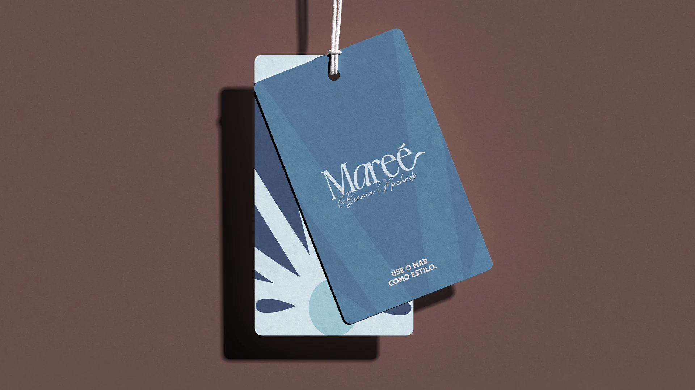
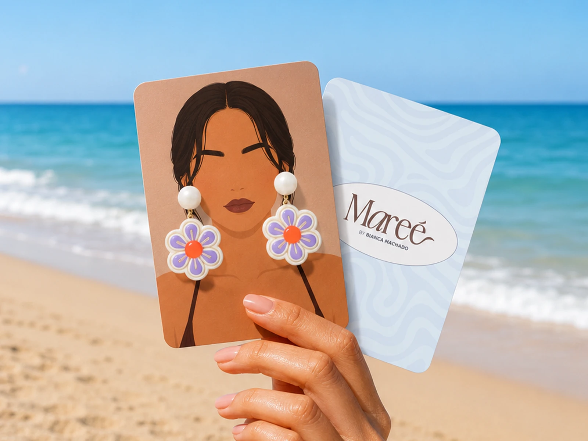
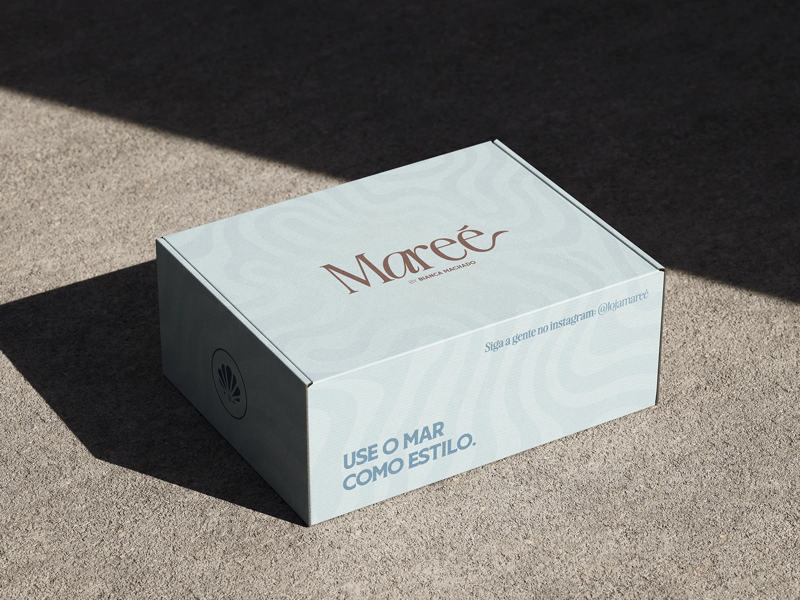
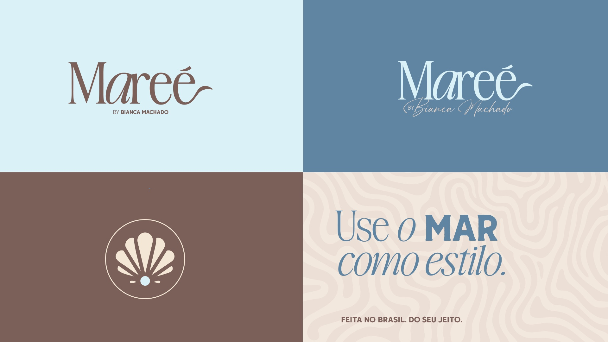

Contexto
Sobre a marca
A Mareé é uma loja de moda praia criada por Bianca Machado, influenciadora digital de Recife. Com foco em beachwear feminino e curadoria própria, a marca entrega biquinis, maiôs e acessórios selecionados pela Bianca. Com modelos renovados toda semana, a Mareé une estilo, leveza e praticidade num só lugar.
O desafio
O que a marca precisava comunicar
A Mareé chegou ao mercado para resolver um problema real: a mulher que ama a praia mas não sabe o que usar. Num mercado cheio de opções sem direção, a marca precisava comunicar uma identidade forte, sofisticada, acessível ao mesmo tempo e posicionar a Bianca como curadora de confiança, não só influenciadora. O desafio foi construir, do zero, uma marca com personalidade própria e voz clara.
Mockups e aplicações




Próximo projeto
Ancorar
Soluções em ancoragens · Estratégia de Marca

O próximo capítulo começa aqui